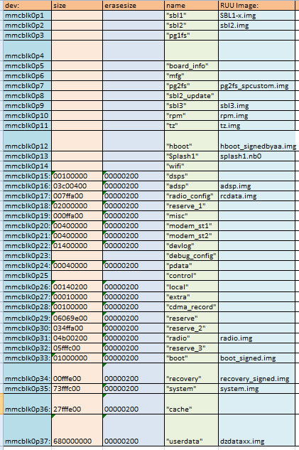

Бэкап всех разделов HTC One M7
Все мы конечно задумывались о резервировании всех разделов смартфона HTC One M7, ведь это защитит смартфон от поломок в случае неудачной прошивки, либо чего-то еще. В этой инструкции мы рассмотрим способ резервирования всех разделов смартфона HTC One M7, НЕ включая разделы boot, recovery, system, cache, userdata, т.к их бэкап можно сделать в любом кастомном рекавери.
На скриншоте ниже Вы можете ознакомится с разделами смартфона.

Требования:
- Смартфон HTC One M7
- Компьютер на базе OS Windows
- Установленные на ПК драйвера HTC
- Наличие Root прав на смартфоне
- Наличие установленного busybox
- Наличие S-OFF
Приступаем к самому процессу бэкапа:
- Скачиваем данный архив и разархивируем его в локальный диск C:/ в папку, в имени которой не содержатся пробелы
- Скачиваем архив с утилитой для бэкапа и разархивируем его в папку с распакованным архивом из пункта 1
- Включаем "отладку по USB" на смартфоне в настройках для разработчика и подключаем его к ПК
- Запускаем исполняемый файл backpart_1-32_v.2.01a.exe (в папке, полученной из пунктов 1 и 2)
- Следуем дальнейшим инструкциям, которые будут отображаться в окне с программой. Все забэкапленные файлы будут находится в папке с утилитой и файлами adb и fastboot (получили данную папку из пунктов 1 и 2)
Теперь Мы можем сохранить эти файлы в надежном месте, они смогут помочь нам восстановиться при неудачых манипуляциях с телефоном!